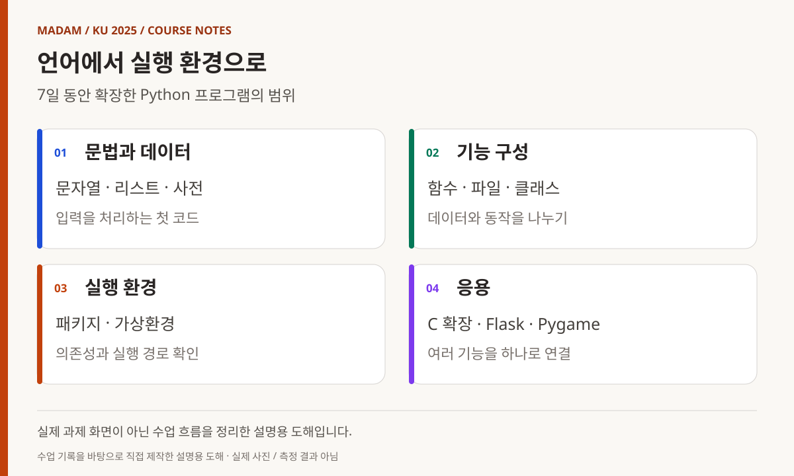
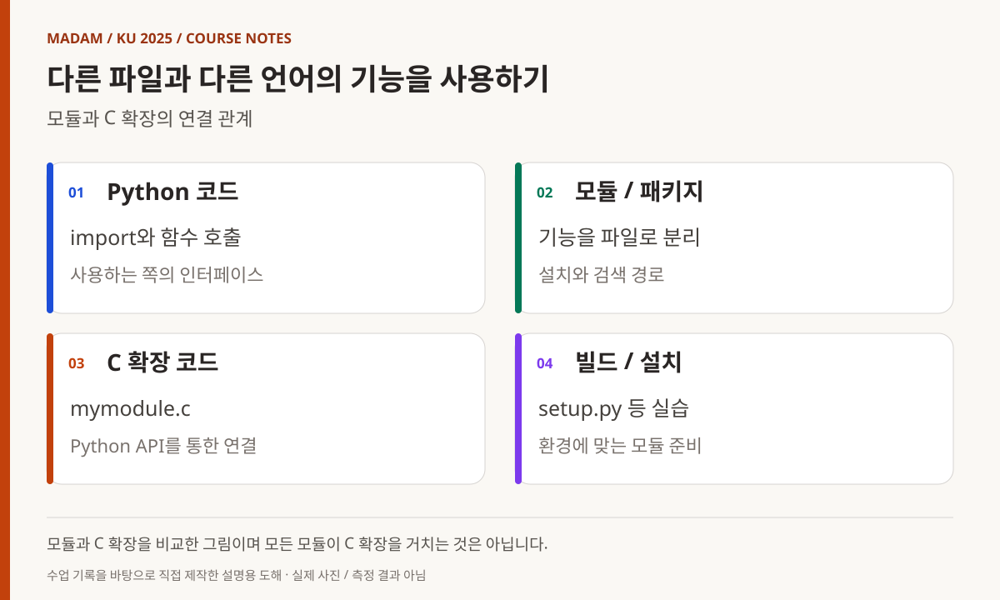
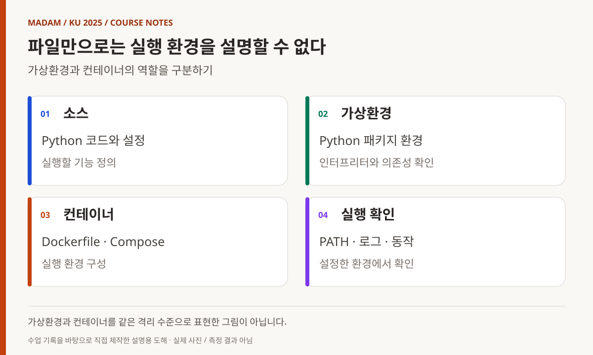
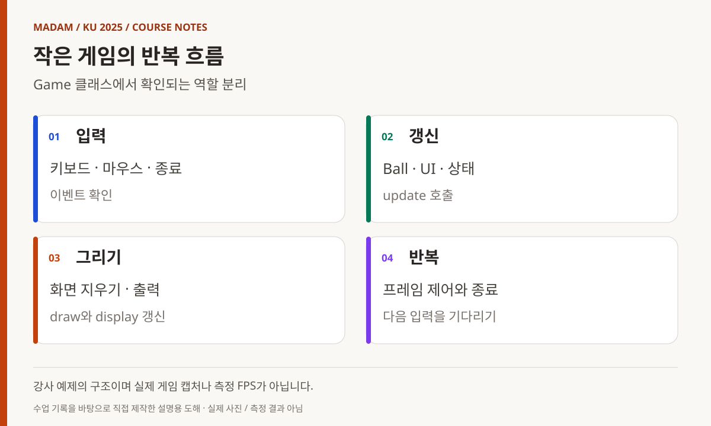

KOREA UNIVERSITY SEJONG / 2025 / SUBJECT 06
Python,
문법에서
애플리케이션까지
문자열과 함수에서 패키지·가상환경·객체 설계로.
다음 데이터·AI 수업의 실행 기반을 만드는 과정.
빅데이터·IoT 소프트웨어 개발자 과정
Python, 문법에서 실행 환경과 작은 애플리케이션까지
TCP/IP 수업 다음에는 Python으로 언어와 개발 환경의 범위를 넓혔다. C·C++에서 익힌 변수와 함수, 자료구조를 다른 문법으로 표현하는 데서 출발했지만, 실제 기록은 C 확장 모듈, 패키지 구성, 가상환경, 컨테이너와 Pygame까지 이어진다. 뒤에 진행할 영상처리와 데이터 분석 수업에 필요한 실행 환경을 이해하는 과정이기도 했다.
- 교육 기관
- 고려대학교 세종캠퍼스
- 이 글의 기간
- 2025.05.07–05.15
7일의 수업 기록 - 주요 학습 내용
- Python · C 확장 · 패키지 · Docker · Pygame
- 과정 전체와의 관계
- 2025년 3월–7월 15일 장기 과정 중
날짜별 근거가 있는 과목 수업 기록
MADAM 대표 활동 이전에 진행한 최수길의 교육 경험입니다. 과정 전반의 감독 경험을 바탕으로, 강사 수업 기록과 예제·계획서를 대조했습니다.

도해 내용 읽기
- 문법과 데이터 — 문자열 · 리스트 · 사전 / 입력을 처리하는 첫 코드
- 기능 구성 — 함수 · 파일 · 클래스 / 데이터와 동작을 나누기
- 실행 환경 — 패키지 · 가상환경 / 의존성과 실행 경로 확인
- 응용 — C 확장 · Flask · Pygame / 여러 기능을 하나로 연결
05.07
입력받은 문자열을 처리하는 첫 프로그램
첫날에는 들여쓰기, 자료형, 연산자와 문자열을 다뤘다. input의 반환값을 숫자로 변환하고 연산한 뒤 출력하는 흐름을 섭씨·화씨 변환 과제로 연결했다. 구구단과 단어 개수 세기 과제도 기록돼 있다. 짧은 예제 안에서 입력, 자료형 변환, 반복, 문자열 처리를 함께 확인하는 구성이다. [1]
수업은 Python 문법만 따로 소개하지 않았다. C로 Python 인터프리터를 사용하는 예제를 작성하고 실행 프레임과 객체의 개념을 살폈다. 저장소의 pythonInterpreter.c는 Python API를 호출하는 C 코드여서, 앞선 언어 수업과 새로운 실행 환경이 연결되는 지점을 보여 준다. [2]
문자열의 split·join·strip, 검색과 치환 메서드를 다루면서 같은 문자열도 목적에 따라 여러 단계로 가공할 수 있음을 살폈다. 첫날의 과제는 특정 출력문을 외우는 것보다, 사용자가 입력한 데이터를 어떤 타입과 처리 순서로 다룰지 생각해 보는 출발점이었다.
05.08
자료구조와 모듈, 그리고 C 확장
둘째 날에는 조건문과 datetime 모듈, 리스트·튜플, range·enumerate를 다뤘다. 리스트에 값을 추가하거나 제거하고 순서를 바꾸는 동작을 익히면서, 전날의 문자열 중심 프로그램을 여러 값을 관리하는 프로그램으로 넓혔다. 오전에는 3D 프린터 사용 안내도 기록되어 있어 하루 전체를 Python 문법 수업으로만 계산하지 않는다. [1]
import와 모듈·패키지, PATH·PYTHONPATH를 설명한 뒤 동적 로딩으로 범위를 확장했다. dlMain.c와 plugin.c를 작성하고 dlopen·dlsym·dlclose를 살폈다. 파일을 불러온다는 표면적인 동작 뒤에 실행 시점의 연결과 함수 탐색이 있음을 다루는 내용이었다.
이후 mymodule.c와 setup.py를 작성해 C 확장 모듈을 패키지로 설치했다. 이 실습은 두 언어를 섞었다는 결과보다, C로 만든 기능을 Python이 사용하는 경로와 빌드·설치 단계를 연결했다는 점에 의미가 있다. 공개한 참조는 강사 예제이며 교육생별 설치 환경이나 산출물은 포함하지 않는다. [3]

도해 내용 읽기
- Python 코드 — import와 함수 호출 / 사용하는 쪽의 인터페이스
- 모듈 / 패키지 — 기능을 파일로 분리 / 설치와 검색 경로
- C 확장 코드 — mymodule.c / Python API를 통한 연결
- 빌드 / 설치 — setup.py 등 실습 / 환경에 맞는 모듈 준비
05.09
함수를 나누고 파일에 남기기
사전 자료형의 key·value와 반복, 리스트 컴프리헨션을 다룬 뒤 함수의 인자로 넘어갔다. 기본값, 위치·키워드 인자, 가변 인자, packing·unpacking을 비교하면서 함수를 호출하는 쪽과 구현하는 쪽의 약속을 살폈다. 재귀와 캐시, 람다 함수도 같은 날의 기록에 포함된다. [1]
오후에는 파일을 열고 읽고 쓰는 과정과 with open을 실습했다. 터미널에 나타났다가 사라지는 출력에서 파일에 남겨 다시 읽는 데이터로 범위가 확장된 것이다. 파일 디스크립터 확인과 print의 file 옵션도 다뤄, 함수 호출과 운영체제 자원의 연결을 다시 확인했다.
이날은 일경험 프로그램 안내도 함께 진행됐다. 따라서 기록의 의미는 8교시 내내 특정 기능을 깊게 구현했다는 데 있지 않다. 여러 주제를 연결하며 함수와 데이터 저장의 기본 경로를 익힌 실제 운영 흐름에 있다.
05.12
반복·예외·패키지를 프로그램의 구조로 보기
다음 수업일에는 generator의 yield·next·send와 iterator의 __iter__·__next__를 설명했다. 반복문을 사용하는 단계에서 값을 어떻게 차례로 제공할지 정의하는 단계로 이동한 것이다. 사용자 정의 예외를 작성하고 try·except·finally·raise를 다루면서 정상 경로 외의 동작도 코드 구조에 포함했다. [1]
random 모듈과 분포 시각화, 여러 분야의 외부 라이브러리 소개가 이어졌다. 웹·데이터·AI·GUI·테스트 도구 이름이 함께 등장하지만 이를 모두 독립 실습으로 구현했다는 뜻은 아니다. 실제 작성·설치 기록이 있는 setuptools 패키지와 uv_test 패키지를 이 글의 구체적인 참조로 삼았다. [4]
패키지는 코드 파일의 묶음이면서 실행 환경과 배포 방식의 문제이기도 하다. 기능을 다른 파일에서 불러오고 설치한 뒤 사용할 수 있게 구성하면서, 이후 노트북과 분석 라이브러리를 사용하는 수업에 앞서 의존성 관리의 필요성을 확인했다.

도해 내용 읽기
- 소스 — Python 코드와 설정 / 실행할 기능 정의
- 가상환경 — Python 패키지 환경 / 인터프리터와 의존성 확인
- 컨테이너 — Dockerfile · Compose / 실행 환경 구성
- 실행 확인 — PATH · 로그 · 동작 / 설정한 환경에서 확인
05.13
실행되는 환경을 구분하기
13일에는 venv와 conda를 실습하고 pip·PATH를 확인했다. 이어 Poetry의 프로젝트 설정과 lock 파일, poetry run python을 살폈다. 당시 기록에는 poetry shell 실습이 되지 않았다는 메모도 남아 있다. 모든 도구가 같은 방식으로 동작했다고 정리하지 않고, 실행 환경을 확인하며 다른 진입 방법을 사용한 수업으로 읽어야 한다. [1]
오후에는 Docker와 VS Code Dev Containers를 소개하고 Dockerfile, Flask 예제, Compose 설정을 작성했다. Python 파일만 전달하는 경우와 실행에 필요한 환경까지 구성하는 경우의 차이를 다룬 것이다. 저장소의 docker_test에는 Dockerfile·compose.yml·애플리케이션 코드가 구분돼 있어 이러한 구성 관계를 확인할 수 있다. [5]
CI/CD 도구도 설명 목록에 있지만 이 과목에서 실제 배포 파이프라인이 운영됐다는 근거로 확대하지 않는다. 확인 가능한 범위는 가상환경과 패키지 관리의 비교, 컨테이너 설정 작성, Flask 예제를 통한 실행 구조의 실습이다.
05.14
객체의 동작을 정의하고 공통 처리를 감싸기
클래스 수업에서는 생성자와 객체 생성, 파일 저장·읽기, pickle을 이용한 직렬화를 다뤘다. __str__·__repr__과 연산자 관련 특수 메서드를 살펴보면서 객체를 출력하거나 연산할 때의 동작을 정의했다. 상속과 super, 메서드 탐색 순서도 이어졌다. [1]
dataclass와 default_factory, 속성 접근과 호출을 다루는 메서드, 래퍼 함수와 데코레이터를 실습했다. 시간 측정 데코레이터는 여러 함수에 공통적으로 적용할 처리를 분리해 보는 예였다. 문법 항목을 나열하는 데서 그치지 않고 객체의 책임과 공통 동작을 구성하는 방법을 살폈다.
마지막에는 threading 실습이 진행됐다. 앞선 C++와 네트워크 수업에서 접한 여러 실행 흐름의 개념을 Python의 도구로 다시 연결한 셈이다. 이 글은 개인별 객체 예제의 데이터나 평가 내용을 공개하지 않고, 구현 주제와 코드 구성 수준에서 설명한다.

도해 내용 읽기
- 입력 — 키보드 · 마우스 · 종료 / 이벤트 확인
- 갱신 — Ball · UI · 상태 / update 호출
- 그리기 — 화면 지우기 · 출력 / draw와 display 갱신
- 반복 — 프레임 제어와 종료 / 다음 입력을 기다리기
05.15
Pygame에서 입력·상태·화면을 연결하기
마지막 기록일에는 asyncio와 async·await를 설명한 뒤 uv를 이용한 gravity 게임 작성으로 넘어갔다. Sprite 상속, 화면 갱신, 벡터를 이용한 위치·움직임, 충돌 처리, UI 클래스가 순서대로 기록돼 있다. 문법 단위를 배운 뒤 여러 객체가 함께 움직이는 작은 애플리케이션으로 묶는 마무리였다. [1]
강사 저장소의 Game 클래스는 이벤트 처리, update, draw를 구분한다. Ball과 UI를 다른 모듈에서 가져오고 프레임마다 상태 갱신과 화면 출력을 수행한다. 이 구조는 동작을 한 함수에 모두 쌓기보다 입력·상태·표시를 나누어 읽는 구체적인 사례다. 설정된 fps 값은 코드의 목표이며 실제 장치의 측정 성능으로 제시하지 않는다. [6]
7일의 수업은 Python 문법을 시작으로 다른 언어와 연결하고, 환경을 분리하며, 패키지와 객체로 기능을 묶는 방향으로 진행됐다. 이후 OpenCV와 머신러닝에서 라이브러리를 불러오고 데이터를 처리할 때 필요한 기반이다. 교육생 모두가 동일한 완성도에 도달했다고 주장하지 않고 당시 수업과 강사 예제에 남은 흐름을 기록한다.
참조 자료와 기록 범위
- 1. 날짜별 Python 수업 기록 ↗
7일의 언어·환경·응용 실습 진행 내용. - 2. C에서 Python 인터프리터 사용 ↗
두 언어의 실행 환경을 연결하는 예제. - 3. Python C 확장 모듈 ↗
C 기능을 Python 모듈로 구성하는 강사 코드. - 4. uv_test 패키지 설정 ↗
프로젝트와 의존성 구성의 실제 파일. - 5. Flask 실습의 Compose 설정 ↗
애플리케이션 실행 환경을 구성한 실습 자료. - 6. Pygame의 Game 클래스 ↗
입력 이벤트·상태 갱신·화면 출력을 구분한 코드.
공개 참조는 강사 저장소의 동일한 리비전(856a133)에 고정했습니다. 내부 대조 자료: Python 프로그래밍 강의계획서(2025.05.07). 3D 프린터와 일경험 안내가 포함된 실제 수업 기록입니다. 소개한 모든 라이브러리를 개별 구현·배포한 과정으로 해석하지 않습니다.
교육생 이름·계정·얼굴·연락처·개인별 평가 및 제출물 링크는 수록하지 않았습니다. 강사 코드는 당시 실습의 참고 자료이며, 새로 실행하거나 성능·안정성을 검증한 결과가 아닙니다. 그림은 기록에 근거해 직접 제작한 설명용 도해입니다.